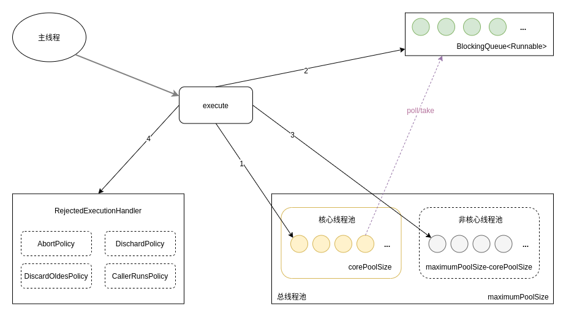
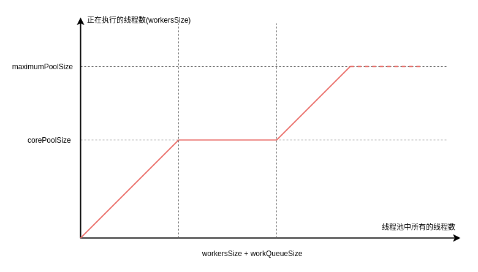

Ch17-Java Executors 之 ThreadPoolExecutor
April 10, 2020
java.util.concurrent.ThreadPoolExecutor
1. 接口定义 #
public ThreadPoolExecutor(
int corePoolSize,
int maximumPoolSize,
long keepAliveTime,
TimeUnit unit,
BlockingQueue<Runnable> workQueue,
ThreadFactory threadFactory,
RejectedExecutionHandler handler);
| 状态 | 说明 |
|---|---|
| corePoolSize | 核心线程数 |
| maximumPoolSize | 最大线程数 |
| keepAliveTime | 非核心线程保持存活的时间，比如 TimeUnit.SECONDS 等 |
| unit | 非核心线程保持存活的时间单位 |
| workQueue | 任务存储队列，比如 SynchronousQueue、LinkedBlockingQueue、ArrayBlockingQueue |
| threadFactory | 当线程池需要新的线程时，会用 threadFactory 来生成新的线程 |
| handler | 拒绝策略，比如 AbortPolicy、DiscardPolicy、DiscardOldestPolicy、CallerRunsPolicy |
2. 基本原理 #
2.1 执行流程 #

- 检测线程池运行状态，如果不是 RUNNING，则直接拒绝，线程池要保证在 RUNNING 的状态下执行任务。
- 如果
workerCount < corePoolSize，则创建并启动一个线程来执行新提交的任务。 - 如果
workerCount >= corePoolSize，且线程池内的阻塞队列未满，则将任务添加到该阻塞队列中。 - 如果
workerCount >= corePoolSize && workerCount < maximumPoolSize，且线程池内的阻塞队列已满，则创建并启动一个线程来执行新提交的任务。 - 如果
workerCount >= maximumPoolSize，并且线程池内的阻塞队列已满，则根据拒绝策略来处理该任务，默认的处理方式是直接抛异常。
2.2 线程数量变化 #

3. 线程池生命周期管理 #
线程池使用一个 AtomicInteger 类型的变量表示运行状态 (runState) 和线程数量 (workerCount)（高 3 位保存 runState，低 29 位保存 workerCount）。
注意 这里留意区分线程池的运行状态和线程的运行状态。
| 运行状态 | 说明 |
|---|---|
| RUNNING | 接收新任务和线程池队列中的任务 |
| SHUTDOWN | 不接受新任务，但是接收线程池队列中的任务 |
| STOP | 不接收新任务也不接收线程池队列中的任务，并且打断正在进行中的任务 |
| TIDYING | 所有任务终止，待处理任务数量为 0 的时候，线程转换为 TIDYING 状态，将会执行 terminated 钩子函数 |
| TERMINATED | terminated 函数执行完成后会变为此状态 |